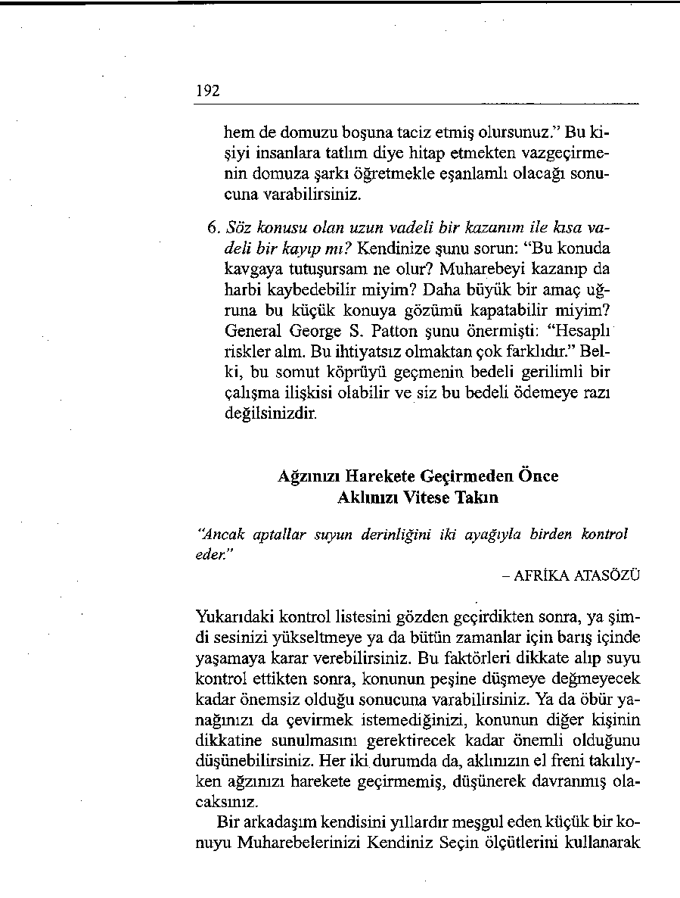

“Hayatta öğrenmesi en zor şey, hangi köprüden geçmek
hangi köprüyü yakmak gerektiğine karar verebilmektir.”
- DAVID RUSSELL
Yirmi Birinci Bölüm
Muharebelerinizi Kendiniz Seçin
Bir şeyin, açığa çıkarmak gerekecek kadar önemli olup olmadığına nasıl karar verebilirsiniz? Ne zaman kapalı tutmak, ne zaman açığa çıkarmak gerektiğini nasıl bilebilirsiniz?
Karşı karşıya gelmek ya da gelmemek, işte bütün mesele
bundadır. Birisini sadece size karşı davranışından hoşlanmadı ğınızda karşınıza almak zekice bir yaklaşım değildir. Zekice
olan, birisini karşınıza almadan önce bunun bütün olası sonuçlarını gözden geçirmektir.
Büyük bir tıbbi grubun hasta bakım müdürü olan dostum
Therese ancak kırk yaşma geldiğinde hamile kalabildi. Sorunlu bir dokuz ay geçirdi ve bunun son üç ayında evde yatmak zorunda kaldı. Sağlıklı bir oğlan çocuğu dünyaya getirdi, ama yeniden işe başlayabilmesi için görece uzun bir istirahat dönemi geçirmesi gerekti, işvereni doğum izni konusunda cömert davrandı ve hem yerini açık tuttu, hem de işe gelmediği aylar için de maaşını ödedi.
190
İşe başladıktan bir süre sonra, Therese bir rastlantı sonucu
maaşının öteki bölüm şeflerine oranla yılda 10 bin dolar daha
düşük olduğunu öğrendi. Yetenekleri, sorumlulukları ve kıdemi ötekilerden daha aşağı olmadığı için, bu farkın adil olmadığını düşünüyordu. Bu rahatsız edici olguyu öğrenmiş oldu ğu günlerde kendisini ziyarete gitmiştim. Ertesi gün genel müdürle bu sorunu görüşmek ve bu haksızlığın giderilmesini talep etmek niyetindeydi.
Kendisine tek bir soru sordum: “Therese, bu iyi bir zamanlama mı?” Duruma bu açıdan baktığında, işvereninin son aylarda kendisine birçok ödün vermiş olduğunu hatırladı. Odasına girip maaş sorununu gündeme getirseydi, şefi muhtemelen artışı onaylayacak bir ruh hali içerisinde olmayacak, daha çok, “Sen işe yaramaktan çok sorun çıkarıyorsun” deme eğiliminde bulunacaktı.
Therese, buna öfkelenmek yerine, birkaç ay örnek bir iş
performansı göstererek kendi değerini firmasına kanıtlamaya
karar verdi. Bunu başardıktan sonra, kendisiyle maaş konusunu konuştuğunda genel müdür talebine muhtemelen daha olumlu bir açıdan yaklaşacaktı.
Riskleri Hesaplayın
“Tanrı bize; değiştirilmesi mümkün olmayan şeyleri sükûnetle kabul etme inayetini, değiştirilmesi gereken şeyleri değiştirme cesaretini ve ikisini birbirinden ayırt edebilme bilgeliğini bağışlamıştır.”
- REINHOLD NIEBUHR
Canınızı sıkan bir kişiyi ya da durumu düşünün. Aşağıdaki
Muharebelerinizi Kendiniz Seçin ölçütlerini kullanarak, buna
karşı çıkmanın akıllıca mı, yoksa riskli mi olduğuna karar verin. Kendinize şunları sorun:
191
1. Bu sıradan bir olay mı? Belki tezgâhtarın biri size tatlım diye hitap etmiştir ve siz de bundan hoşlanmamış-
smızdır. Kendinize sorun: “Bu kişiyi hayatta bir daha
görecek miyim?” Açık ki, bu konu dünya barışını tehdit edecek değildir. Aldırmadan yürüyüp geçebilirsiniz.
2. Bu direngen bir rahatsızlık mı? Ya aynı işyerinde birlikte çalıştığınız bir tezgâhtar size günde yirmi kere tatlım diye hitap ediyorsa? Şimdi çıta daha yükselmiştir. Bu bir kerelik kızgınlık değildir. İş bu noktaya vardığında söz konusu kişiyle bir görüşmekte yarar vardır.
3. Olayını tarihsel arkaplanı nedir? Hafifletici sebepleri
değerlendirin. Belki siz işe daha yeni girmişken, size
tatlım diye hitap eden kişi yirmi yıllık bir elemandır.
Belki son zamanlarda başka konularda şikâyetçi olarak hoşgörü kredinizi doldurmuşsunuzdur. Bu durumdan sizden başka rahatsız olan kimse var mı?
4. Davranış kasıtlı mı, yoksa masum mu? Bunu sizi kar şısına almak için kasıtlı olarak mı yaptığını düşünüyorsunuz, yoksa bu şefkatli bir muhabbet ifadesi mi?
5. Bu durum değişebilir mi? Kişi davranışını değiştirebilecek durumda mı? Size değişik davranmaya açık mı?
Belki de, bu kişi size kendi adınızla hitap edebilirdi
(zaten adınız yakanızda asılı), ama bütün yetişkin ya şamı boyunca kadınlara hep tatlım diye hitap etmeye
alışmıştır ve bunu değiştirmek için şimdi bir neden
görememektedir. Belki şöyle düşünüyordur: “Ben
böyleyim. Beğenmiyorsan, sen bilirsin.”
Bir keresinde bir duvar yazısında şunları okumuştum: “Hiçbir zaman bir domuza şarkı söylemeyi öğretmeye kalkışmayın. Hem vaktinizi boşa harcamış, 
192
hem de domuzu boşuna taciz etmiş olursunuz.” Bu ki şiyi insanlara tatlım diye hitap etmekten vazgeçirmenin domuza şarkı öğretmekle eşanlamlı olacağı sonucuna varabilirsiniz.
6. Söz konusu olan uzun vadeli bir kazanım ile kısa vadeli bir kayıp mı? Kendinize şunu sorun: “Bu konuda kavgaya tutuşursam ne olur? Muharebeyi kazanıp da harbi kaybedebilir miyim? Daha büyük bir amaç uğruna bu küçük konuya gözümü kapatabilir miyim?
General George S. Patton şunu önermişti: “Hesaplı
riskler alm. Bu ihtiyatsız olmaktan çok farklıdır.” Belki, bu somut köprüyü geçmenin bedeli gerilimli bir çalışma ilişkisi olabilir ve siz bu bedeli ödemeye razı değilsinizdir.
Ağzınızı Harekete Geçirmeden Önce
Aklınızı Vitese Takın
"Ancak aptallar suyun derinliğini iki ayağıyla birden kontrol
eder.”
- AFRİKA ATASÖZÜ
Yukarıdaki kontrol listesini gözden geçirdikten sonra, ya şimdi sesinizi yükseltmeye ya da bütün zamanlar için barış içinde yaşamaya karar verebilirsiniz. Bu faktörleri dikkate alıp suyu kontrol ettikten sonra, konunun peşine düşmeye değmeyecek
kadar önemsiz olduğu sonucuna varabilirsiniz. Ya da öbür yanağınızı da çevirmek istemediğinizi, konunun diğer kişinin dikkatine sunulmasını gerektirecek kadar önemli olduğunu düşünebilirsiniz. Her iki durumda da, aklınızın el freni takılıyken ağzınızı harekete geçirmemiş, düşünerek davranmış olacaksınız.
Bir arkadaşım kendisini yıllardır meşgul eden küçük bir konuyu Muharebelerinizi Kendiniz Seçin ölçütlerini kullanarak
193
hallediyor. Arkadaşım kendisine tam adıyla, Robert olarak hitap edilmesini ister. Önceleri, birisi kendisine Bob ya da Rob diye seslendiğinde için için kızardı. Şimdi, birisi kendisine böyle hitap etme densizliğini gösterdiğinde, önce kendisine bu
kişiyi bir daha görüp görmeyeceğini soruyor. Eğer görmeyecekse, hiç aldırmıyor. Eğer o kişiyle birlikte olmak durumundaysa, sakin bir şekilde, “Bana Robert diye hitap edilmesini tercih ederim” diyor.
Dırdır Etmek mi, Etmemek mi?
“Uzun vadeli ilişkilerimizde diğer tarafın eksikliklerini abartır üstünlüklerini küçümseriz.”
- ANONİM
Eşler için düzenlediğimiz Tongue Fu seminerlerinde katılımcılardan eşlerinin hoşlanmadıkları bir yanları üzerinde düşünmelerini istiyorum. (Çok bilmişin biri bir keresinde, “Sadece bir yanlarını mı?” diye espriyi patlattı.) Sonra, bu rahatsız edici davranışın sorun etmeye değip değmeyeceğini belirlemek için altı ölçütü kullanmalarını söylüyorum. Eğer arzu edilmeyen bu nitelik hiçbir zaman değişmeyecekse ve eşleri bu kusurlarını bağışlatacak başka yanlara sahipse, kendilerine bu eksikliğe takmak yerine eşlerini bir bütün olarak ele almayı öneriyorum.
Bir kadın bu fikrin evliliğini kurtardığım anlattı: “Kocam
golf oynamayı çok sever. Aslında golf için yaşar demek lazım.
Her cumartesi, gökten yağmur bile boşansa, sabah saat yediden öğleden sonra ikiye kadar birkaç kafadar hep golfte olurlar. O nedenle, çocuklarımızın hiçbir spor karşılaşmasına katılamaz. Onları müsabakalara hep ben götürürüm ve babalarının kendilerini seyretmeye niçin gelemediğini açıklamaya çalışırım.
“Bunun çocukları (ve beni) incittiğini kaç kez anlattımsa da
194
bir faydası olmadı. Golf onun için tartışılmaz bir konuydu.
Bütün hafta çok yoğun çalıştığını ve yarım günü olsun istedi ği gibi geçirmeye hakkı olduğunu düşünüyordu. Bu içimde o
kadar öfke biriktirmişti ki, sonunda kendisine bir ültimatom
vermeye karar verdim: Eğer golf ailesinden daha önemliyse,
biz onsuz da yapabilirdik.
Ültimatom mu, Anlayış mı?
“Çoğu insan birisinin kendisini çıldırtmasını beklemez. Bunu kendisi yapar.”
- ANONİM
Golf dulu bayan, eşine bir ültimatom verip vermemeye karar
vermek için altı ölçütü gözden geçirdiğini anlattı. “Golf oynamaktan vazgeçmeyeceğini düşündüm. Golfun ruh sağlığını koruduğunu ve topa kendi başına vurabildiği sürece hiçbir şekilde bırakmaya niyeti olmadığını daha önce birkaç kez belirtmişti.
“Sonra kendime şu önemli soruyu sordum: ‘Bu konu evliliğimizi tehlikeye atmaya değecek kadar önemli mi?’ Austin’in bu eksisine karşı sahip olduğu bütün artıları tek tek gözümün önünden geçirdim. Sonuçta, bu tek konunun benim gözümde oransız bir boyut kazanmış olduğunu ve yirmi yıllık bir ilişkiye son vermeye değmeyeceğini gördüm.
“Tersine, bu hobisine çıldırmak yerine, buna ilişkin tutumumu değiştirmeye karar verdim. Delirmek yerine, kendisine arkadaşlarıyla dışarı çıkma olanağı veren bu sporda becerikli olmasına sevinmeliydim. Çocuklara, bu tek eksikliği yerine
babalarının kendileri için yaptığı bütün öteki şeyler üzerinde
yoğunlaşmalarında yardımcı olmaya karar verdim. Ve hafta
sonlarından payımı alamamış olmamak için, pazar sabahları
en iyi arkadaşımla buluşup gezmeye çıkmaya başladım. Kaybedeceğim baştan belli olan bu muharebeye girmemeyi tercih ettim ve sonuçta hepimiz kazandık.”
195
Yeni Manzaralar Aramak mı,
Yeni Bir Gözle Bakmak mı?
“Herkes dünyayı değiştirmeyi düşünüyor, kimse kendini değiştirmeyi akıl etmiyor.”
- LEO TOLSTOY
Sizi mutsuz kılan bir durumu düşünün. Bu konuda yapabilece ğiniz başlıca üç şey vardır. Şunları yapabilirsiniz:
1. Diğer kişiyi değiştirmek. Bu pek mümkün olmaz.
2. Durumu değiştirmek. Büyük çaplı bir adım (örne ğin, işten ayrılmak, boşanmak ya da okuldan ayrılmak) atmadan önce kendinize şunu sorun: “Tasarladığım bu değişikliğin karşılığını alabilecek miyim?” Eğer bir dengeleme olmayacaksa bu adımı atmak akıllıca olmayacaktır. Sizi mutsuz kılan bu durumdan kurtulmakta acele ederken, sizi belki daha da mutsuz edecek bir başka duruma yuvarlanabilirsiniz.
Dorothea Dix’in dediği gibi, “Boşanmanın her
derde deva olduğunu düşünenlerin çoğu, bunu denediklerinde ilacın hastalığın kendisinden daha beter olduğunu görür.” Başka bir deyişle, çitin öbür tarafındaki otun gerçekten daha yeşil olduğundan emin olmadan üzerinden sıçramayın.
3 .Kendinizi değiştirmek. Bu seçenek her zaman vardır ve her zaman iyi sonuç verir. Kendinizi değiştirme sürecinde (ya iddianızı daha belirgin kılmaya çalışır ya da ilişkinin olumlu yanlarıyla yetinmeyi tercih edersiniz), genellikle diğer tarafın size karşı
davranışını da etkilersiniz ve bu durumu iyileştirir.
Kendinizi değiştirerek dünyanızı da daha iyi bir
yönde değiştirebilirsiniz.
196
“Yeni manzaralar aramak yerine” demişti Marcel Proust,
“yeni gözler geliştirin.” Eğer harekete geçmenin sonuçları yıkıcı olacaksa, o zaman yeni gözler geliştirmeye çalışmakta yarar vardır. Mevcut manzaranıza yeni bir açıdan bakmayı tercih ederek görüşünüzü iyileştirebilirsiniz.
MUHAREBELERİNİZİ KENDİNİZİN
SEÇMESİ İÇİN EYLEM PLANI
Komşunuzun genç oğlu yüksek sesle rock müziği çalmayı çok seviyor. Saat gecenin on biri ve siz uyumaya çalışıyorsunuz. Sonunda canınıza tak ediyor ve “Bu lanet zırıltıya bir son verin artık!” demek üzere telefona sarılıyorsunuz. Ne yapardınız?
UNUTMANIZ GEREKEN